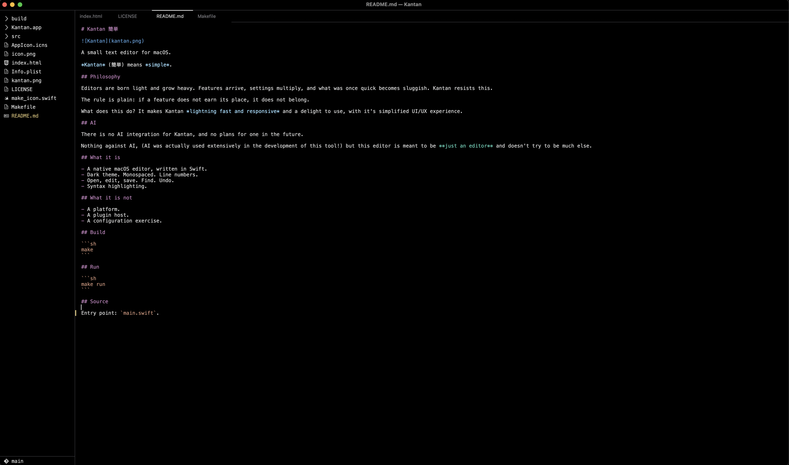

Kantan 簡単
A small text editor for macOS.
Kantan (簡単) means simple.
Image

Philosophy
Editors are born light and grow heavy. Features arrive, settings multiply, and what was once quick becomes sluggish. Kantan resists this.
The rule is plain: if a feature does not earn its place, it does not belong.
What it is
- A native macOS editor, written in Swift.
- Dark theme. Monospaced. Line numbers.
- Open, edit, save. Find. Undo.
- Syntax highlighting.
What it is not
- A platform.
- A plugin host.
- A configuration exercise.
Build
makeRun
make runSource
Entry point: main.swift. View on GitHub →